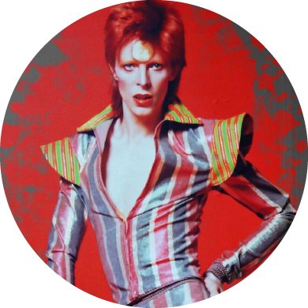

Ziggy Stardust

Dressed in a striking costume, his hair dyed reddish-brown, Bowie launched his Ziggy Stardust stage show with the Spiders from Mars—Ronson, Bolder, and Woodmansey—at the Toby Jug pub in Tolworth in Kingston upon Thames on 10 February 1972. The show was hugely popular, catapulting him to stardom as he toured the UK over the next six months and creating, as described by Buckley, a "cult of Bowie" that was "unique—its influence lasted longer and has been more creative than perhaps almost any other force within pop fandom." The Rise and Fall of Ziggy Stardust and the Spiders from Mars (1972), combining the hard rock elements of The Man Who Sold the World with the lighter experimental rock and pop of Hunky Dory, was released in June. "Starman", issued as an April single ahead of the album, was to cement Bowie's UK breakthrough: both single and album charted rapidly following his July Top of the Pops performance of the song. The album, which remained in the chart for two years, was soon joined there by the 6-month-old Hunky Dory. At the same time the non-album single "John, I'm Only Dancing", and "All the Young Dudes", a song he wrote and produced for Mott the Hoople, were successful in the UK. The Ziggy Stardust Tour continued to the United States.
The Rise and Fall of Ziggy Stardust and the Spiders from Mars (often shortened to Ziggy Stardust) is the fifth studio album by English musician David Bowie, released on 16 June 1972 in the United Kingdom. It was produced by Bowie and Ken Scott and features contributions from the Spiders from Mars, Bowie's backing band — composed of Mick Ronson, Trevor Bolder and Mick Woodmansey. The album was recorded in Trident Studios, London, like his previous album, Hunky Dory. Most of the album was recorded in November 1971 with further sessions in January and early February 1972.
Described as a rock opera and also a loose concept album, The Rise and Fall of Ziggy Stardust and the Spiders from Mars is about Bowie's titular alter ego Ziggy Stardust, a fictional androgynous bisexual rock star who acts as a messenger for extraterrestrial beings. The character was retained for the subsequent Ziggy Stardust Tour through the United Kingdom, Japan and North America. The album, and the character of Ziggy Stardust, were influenced by glam rock and explored themes of sexual exploration and social taboos. A concert film of the same name, directed by D. A. Pennebaker, was recorded in 1973 and released a decade later.
The Rise and Fall of Ziggy Stardust and the Spiders from Mars peaked at number five on the UK Albums Chart and number 75 in the US Billboard Top LPs & Tape chart. As of January 2016 it had sold 7.5 million copies worldwide. The album received widespread critical acclaim. In 2017, it was selected for preservation in the National Recording Registry, being deemed "culturally, historically, or artistically significant" by the Library of Congress.